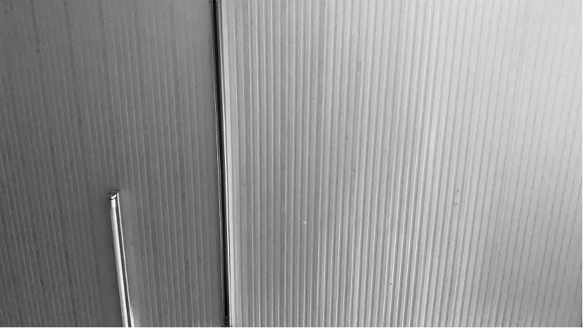
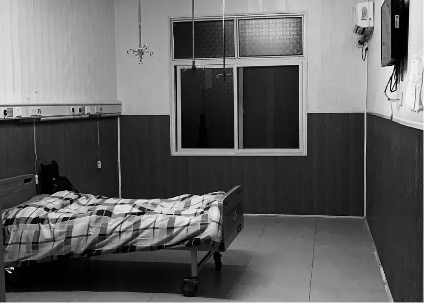
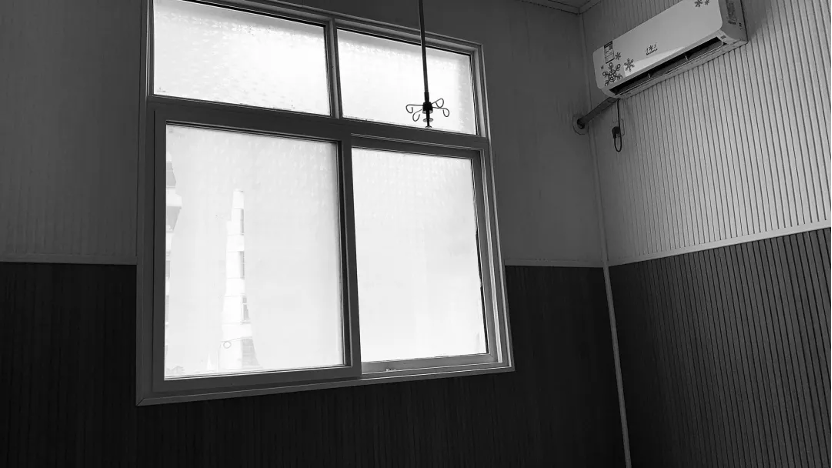

天花板是这世上少有的让我感到莫名安心的东西。在我到如今二十多年的时光里，已经记不清有多少次躺在无数张异乡的床上呆呆地望着头顶发白的天花板。而今，我躺在隔离医院的病床上，盯着头顶的天花板发呆，感到异常安心。
The ceiling is one of the few things in the world that gives me inexplicable peace of mind. In the more than 20 years I have now, I can't remember how many times I lay on countless foreign beds and stared blankly at the white ceiling above my head. Today, I am lying on a bed in an isolation hospital, staring at the ceiling above my head in a daze, feeling extremely reassured.
隔离期间的生活一如所想那般枯燥乏味。每日的活动范围被局限在这个空荡荡的房间之内，工作人员定时定点送来一日三餐，当然也会在指定时间来做核酸和抗体检测。
Life during quarantine was as boring as I thought. The scope of daily activities is limited to this empty room. The staff will deliver three meals a day at regular and fixed points. Of course, nucleic acid and antibody tests will be carried out at designated times.
在这里，一切如常就是最好的状态。一旦有了不同寻常的事情发生，就会令人感到恐慌。就好比有一次，我连续两日被测了核酸，被吓得不轻，在得知隔壁同一趟高铁来的阿姨并没有我这般体验之后，我坐在这张病床上心脏扑通扑通跳个不停，直到最后得知我可能要提前被“释放”了，悬着的心才慢慢回到了它原本的位置。
Here, business as usual is at its best. When something unusual happens, it's scary. Just like once, I was tested for nucleic acid for two consecutive days, and I was very scared. After I learned that the aunt who came next door on the same high-speed train did not have the same experience as me, I sat on this hospital bed and my heart thumped. It kept on, until I finally learned that I might be "released" ahead of time, and the dangling heart slowly returned to its original position.

依稀记得第一天刚下火车被拖来医院，忐忑不安地走进这个房间，心里只有烦闷。而今也慢慢习惯了在这间自己的房间里好好生活。
I vaguely remember that I was dragged to the hospital after getting off the train on the first day, and I walked into this room uneasily, with only annoyance in my heart. Now I am slowly getting used to living in this room of my own.
隔离病房的窗户一直没办法上锁，这件事烦扰了我许久。直到某天夜晚，我突然想到，在这个紧要关头，任谁也不会作死地想要开窗爬进我这个隔离人的房间。这样想来，那些被害妄想的念头又全都消散了。我在这张小床上舒心地打了一个滚，翻身背对着窗户，伴随着老旧空调断断续续的杂音和窗外淅淅沥沥的雨声入睡，心中竟涌现出一股安全感。
The windows of the isolation ward could not be locked all the time, which bothered me for a long time. Until one night, it suddenly occurred to me that at this critical juncture, no one would want to open the window and climb into my quarantine room. Thinking of this, those delusional thoughts of being victimized have all dissipated. I rolled comfortably on this small bed, turned my back to the window, and fell asleep with the intermittent noise of the old air conditioner and the pattering rain outside the window, and a sense of security emerged in my heart.
隔离房间的大门，也是个让我发愁的隐患。门上那一块透明的小方格，把我的最后一点隐私也给暴露出来。我好几次挪动病床，希望可以避开这一道明亮的光线，最终也只得妥协。后来渐渐发现，工作人员只会在固定的时间点来敲门，其他的隔离人员也不被允许离开房间。透过这块小方格，我也未曾看到过心中幻想过的那些令人发怵的面孔。我便因此安心了下来，毕竟门上的锁还没坏。
The door of the isolated room is also a hidden danger that worries me. The small transparent square on the door also exposed my last bit of privacy. I moved the bed several times, hoping to avoid this bright light, but finally had to compromise. Later, it was gradually discovered that the staff would only knock on the door at a fixed time, and other quarantine personnel were not allowed to leave the room. Through this small square, I have never seen those terrifying faces I imagined in my mind. I was relieved because of this, after all, the lock on the door was not broken.
完美其实是个很虚无缥缈的状态，因为很多东西是人力所不能左右的。锁坏掉了的窗户如是，有透明方格的门也是。重要的不是你执着于去把这个世界变成你幻想的模样，而是带着矛盾生活下去。
Perfection is actually a very illusory state, because many things cannot be controlled by human beings. This is true of windows with broken locks, and of doors with clear squares. The important thing is not that you are obsessed with making the world what you imagined, but that you live with contradictions.
好几个凌晨我依旧无法入睡，盯着头顶的天花板思考人生。从前我总热衷于自我反省，而今我热衷于自夸。
For several early mornings I still couldn't sleep, staring at the ceiling above my head and thinking about life. I’m fond of self-reflection.
在2020年的年度总结里，我写了这一年发现的自己的三个优点，其中一个便是适应能力极强。适应能力强，不代表我到达新的环境不会苦闷不会焦虑，而是不论我处于何种境地，我都能很快调整好自己的心态，带着矛盾生活下去。
In my 2020 annual summary, I wrote about three strengths I discovered this year, one of which is my ability to adapt. Being adaptable does not mean that I will not be depressed or anxious when I arrive in a new environment, but that no matter what situation I am in, I can quickly adjust my mentality and live with contradictions.
“带着矛盾”听上去或许是一种妥协，但我明白，任何一种选择，即使是被迫做出的选择，都有其双面性。我们永远无法达到尽善尽美，但任何努力也都不是一无是处的。而“矛盾”，不过是你的选择所带来的副作用。如果你一直去放大这些副作用，那生活该有多痛苦无趣。
"With contradiction" may sound like a compromise, but I understand that any choice, even a forced one, has two sides. We can never achieve perfection, but no effort is useless. And "contradiction" is nothing but a side effect of your choice. How miserable and boring life would be if you kept exaggerating these side effects.
于我而言，“带着矛盾”只是选择性忽视一些我不爱的东西，这样我才能更热烈地去拥抱和热爱生活。就好像一盘菜里，我只要挑出我不爱吃的芹菜和洋葱，那剩下的东西都是我所爱的。
For me, "with contradictions" is just selectively ignoring something I don't love so that I can embrace and love life more passionately. It's like in a dish, I just pick out the celery and onions that I don't like, and the rest is what I like.
后记：本文取名为《一间自己的房间》，灵感来自于弗吉尼亚·伍尔夫的同名小说。伍尔夫的小说旨在呼吁女性拥有自己的创作空间，去“尽己所能，想方设法给自己挣到足够的钱，去旅游，去无所事事，去思索世界的未来或过去，去看书、做梦或是在街头闲逛，让思考的鱼线深深沉入这条溪流中去”。而如今我在这一间隔离房间内，竟开始有些读懂这本书了。
Postscript: This article is titled "A Room of One's Own", inspired by Virginia Woolf's novel of the same name. Woolf's novel aims to call on women to have their own creative space, to "do whatever they can, find ways to make enough money for themselves, to travel, to do nothing, to think about the future or the past of the world, to read books, dream or It's just wandering the streets and letting the thinking line sink deep into this stream." But now, in this isolated room, I have begun to read this book somewhat.
对我来说，写东西的主要目的是放纵思考。或许我写的很多东西都不值一提，也或许没人能欣赏我写的东西，但思想是值得被记录的。
For me, the main purpose of writing is to indulge in thinking. Maybe a lot of what I write is not worth mentioning, or maybe no one appreciates what I write, but ideas are worth being recorded.